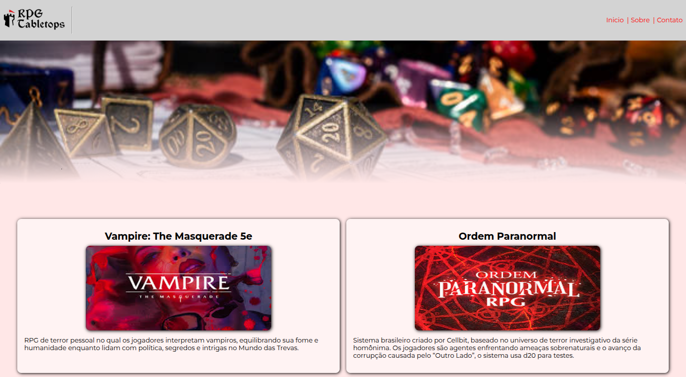

Sobre Mim
Olá! Sou Lucas da Silva Alves, Desenvolvedor Full Stack com experiência em Android, sistemas e tecnologias como Java, Python, HTML, CSS e JavaScript, entre outras. Buscando criar soluções eficientes e inovadoras, aprendendo sempre e entregando projetos de qualidade. Falo Português e Inglês fluentemente e estou aberto a novos desafios.
Objetivo
Atuar como Desenvolvedor de Software Fullstack, contribuindo no planejamento, desenvolvimento e manutenção de sistemas. Tenho foco em qualidade de código, aprendizado contínuo e boas práticas de engenharia de software, buscando sempre entregar soluções eficientes, seguras e alinhadas às necessidades do cliente.
Formações e Linguas
Formações
FATEC - Centro Paula Souza - Superior
Desenvolvimento de Software Multiplataforma | Atual - 2028
UNIP - UNIVERSIDADE PAULISTA - Superior
Análise e Desenvolvimento de Sistemas | 2018 - 2019
ETEC - Centro Paula Souza - Técnico
Desenvolvimento de Sistemas | 2022 - 2024
Microcamp - Técnico
Inglês | 2015 - 2018
Microcamp - Técnico
Informática | 2016 - 2018
Linguas
Fluente
Português
Inglês
Intermediário
Espanhol
Básico
Alemão
Japones
Tecnologias
Front-end
Back-end
Nuvem & DevOps
Mobile
Geral & Desktop
Version Control
Experiências
Estagiário em Desenvolvimento Android
IT Fast - Soluções | 2023 - 2024
- Suporte técnico a desenvolvedores que utilizavam a biblioteca it4r (antiga DarumaFramework).
- Integração com dispositivos de varejo e impressoras térmicas fiscais e não fiscais.
- Desenvolvimento de apps demonstrativos para dispositivos Android da Tectoy (PDVs, Totens e Mini PDVs).
- Participação em apresentações e eventos corporativos.
Estagiário Administrativo
Pássaro Marron | 2022 - 2023
- Suporte a funcionários em processos administrativos e controle de frequência.
- Criação e análise de planilhas de horas, banco de horas e horas extras.
- Monitoramento de sistema de localização de ônibus em tempo real.
Meus Projetos
Site RPG
Trabalho acadêmico — FATEC
Desenvolvi o site temático SiteRPG, uma interface envolvente em HTML e CSS que evoca o universo dos jogos de RPG. O projeto prioriza design imersivo e usabilidade, oferecendo aos usuários uma navegação fluida e estética adaptada ao ambientação.
Janosys API

Trabalho acadêmico — FATEC
Dashboard de dados do Censo 2022 e 2010 com Python (Pandas, Plotly), Flask, fiz parte do desenvolvimento tanto na filtragem e exibição dos dados quanto da concepção e aperfeiçoamento do UI/ UX seguindo especificações do cliente.
Certificados

Escola de Inovadores – Inova CPS
Curso de capacitação em empreendedorismo e inovação, com foco em transformar ideias em modelos de negócio. Aborda temas como gestão, marketing, tecnologia, prototipagem e plano de negócios.

Science & Business Connection - PIT
Evento que promove a integração entre ciência, tecnologia e empreendedorismo. Reúne pesquisadores, estudantes e empresas para discutir inovação, pesquisa aplicada e oportunidades de negócios.